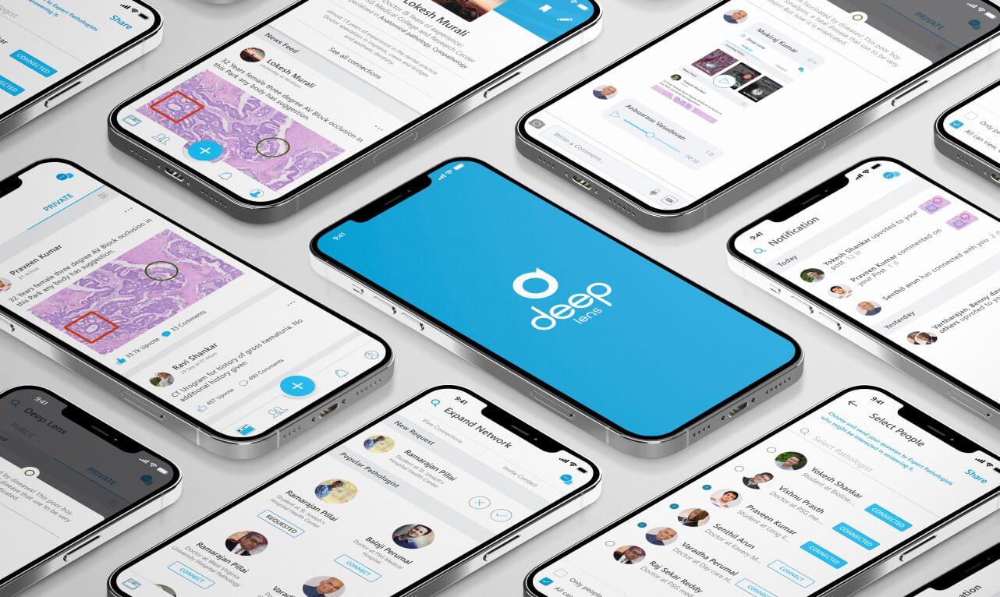
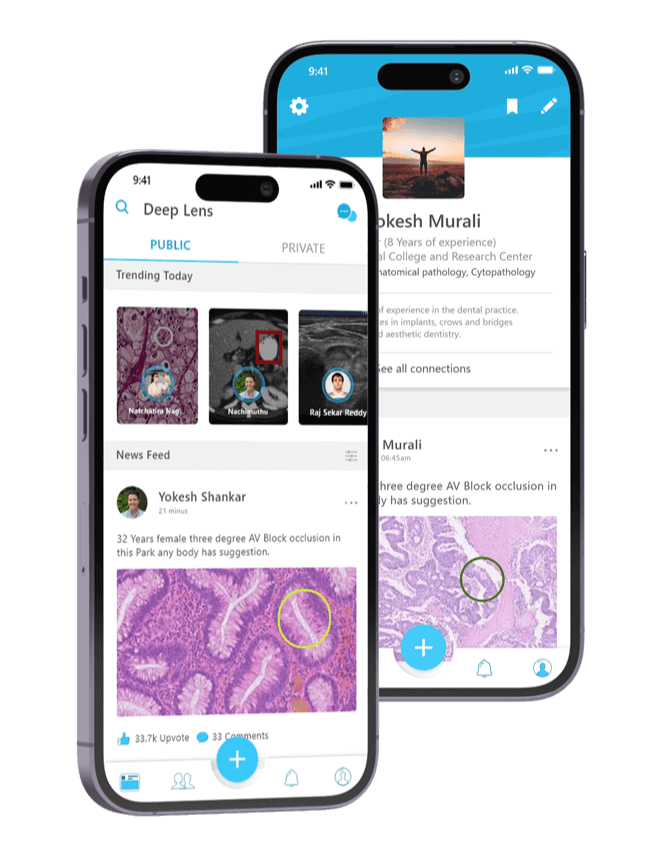
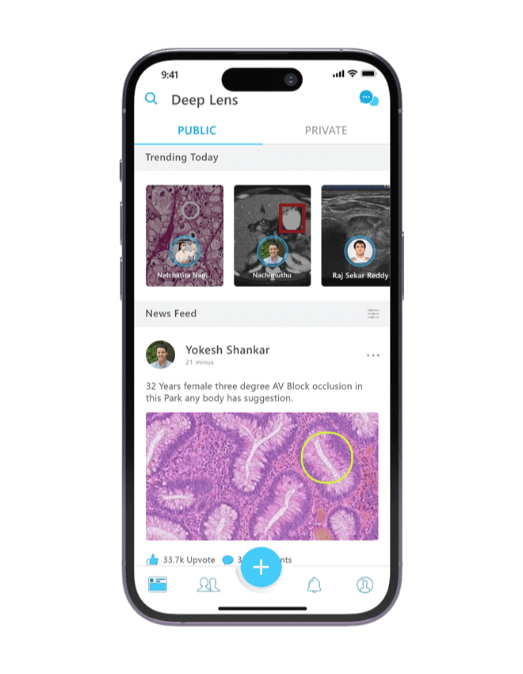

DeepLens
A Unified Social Platform for Pathologists
Healthcare App, A Case Study
AR/VR Powered Social Tool Benefiting Healthcare Professionals

AR/VR Powered Social Tool Benefiting Healthcare Professionals
Medical Industry, Research
Connecting Pathologists in the locality, contributing to better their community and research.
Social Handle For Pathologists to interact on their research.
Healthcare, Social Media
Started with the idea to connect with Pathologists and contribute an efficient social handle to ease interactions and facilitate secured data sharing abilities. DeepLens is a social networking Healthcare software solution developed at Sparkout, the house of innovations. This is a mobile health analysis app development solution crafted for the healthcare sector.
This healthcare mobile app case study on AR/VR-driven healthcare solutions was built for our client who wanted to bridge the community of Pathologists with their medical research needs. With our expert team undergoing rigorous research, we can with a solution connecting the dots and the users(pathologists) as one.
DeepLens is a social networking application, developed for Android. It was specially developed for pathologists in the US to connect and interact better with their fellow communities via the application's features.
If you are searching for the best healthcare mobile app, then DeepLens is a one-spot solution. This healthcare mobile app case study explores everything from the inception of Deeplense.
DeepLens more or less resembles the popular social media platforms making it easy and convenient to work with. A Professionally endorsed application with features to build great personal connections.
The idea behind DeepLens was to create and manage a community of Pathologists. The client wanted to connect pathologists around the country and build an efficient medium that contributes to better specimen analysis and their professional growth. This social networking model was designed to meet the need more effectively and also integrate security measures to secure the confidential data of the clients.
DeepLens was built only for Android as per client requirements. The Project development phase was a total of 10 months. The first 2 months were dedicated to security testing to ensure security traits and UI/UX designing. We curated designs and sent them to the client for approval. With the approved design the development phase started. Finally, it was launched and taken over by the internal team.
In this healthcare app case study, we discuss from the start by discussing the scope of the project. How this exclusive social networking application for Pathologists could be helpful and what is required to make it better and more efficient.
Going ahead with security purposes and big data management, we put in our efforts and finally passed the testing phase for the application. Planned its workflow and operations.
We also suggested the annotation feature that allows users to make precise mentions in their posts about the specimens. To make it simple and convenient for all, Square, circle, and arrow marks were chosen to indicate particular areas.
To maintain data based on the US and which are confidential, the development process of this healthcare mobile app involved going through SOC2 compliance and HIPAA compliance which provided the certification. Integrated qualified secured infrastructure. Finally, it was launched after meeting all its requirements and is running successfully.
The biggest obstacle in bringing this mobile medical app to life completely lies in security and handling huge amounts of information. To encompass a solution with a simple interface, infuse a sleek infrastructure, and fetch in high-end security was the primary goal.
SOC2 compliance stresses the organization on certain norms while handling user data. This is a mandatory compliance standard of the American Institute of CPAs. The availability, Confidentiality, security, and process integrity are maintained under the Trust Service Criteria.
HIPAA compliance is a living healthcare culture that demands its implementations to abide in terms of data, protect it, privacy, security, and integrity.
Ensuring security and big data management needs, we undertook SOC2 compliance and HIPPA configuration to get through the security tests. It was after that we started the process. We developed a security-integrated healthcare mobile app solutio
DeepLens in 2018 laid the base for long-term futuristic integrations. The healthcare app case study clearly states that the client had planned to bring solutions powered by AI.
This being the source for future incorporation, cannot be a cluster or lack security configurations.
Through our expert team at Sparkout, we were able to build DeepLens with a solvent infrastructure that is simple yet comprehends the needs and contributes to the future. This pathologist's healthcare app case study will pave the way to new adventures, and be the trendsetter to curate new solutions connecting professionals in dynamic walks of life.
The First Track It application has three major subscription plans for the Users. $39/month for 10 customers, $69/month for 100 customers, and $149/month for unlimited customers. It can be billed semi-annually and the subscription terms fall in after the 7 days trial for all subscription plans.
Users here are Pathologists and students in the associated field. Pathologists are medical healthcare practitioners. They examine the human body and its tissues and also perform lab tests.
DeepLens user sign-up is very simple. By choosing sign-up, the names, professions, and basic details of the users are collected. Through number, an OTP is sent for verification. The user after verification can explore this medical social networking platform.
The News feed is present with a split screen as Public and private. They can scroll through to find their followers and connections posts. Eventually, users are also allowed to Post, like, and comment on other posts and share them.
The Annotate feature is an added plus in DeepLens and a very peculiar option making it convenient for the user to explain their post much better. The three different shapes - Square, Circle, and Arrow, can be used to specifically identify the area.
While sharing a specimen photo, the user can indicate the area when it's affected by the shape, say Square, followed by other details with a circle and arrow. Meanwhile, apart from post descriptions, likes, and comments, every annotation can be individually described, and like and comment options are also individually made available.
The user can share their post with a particular audience by choosing to share privately and also share publicly in this healthcare app. From the inspiration of popular social networking applications, Instagram and Linked In, we have brought and made functions that simplify the need.


The users can either opt for a Student or a Doctor and file their profile accordingly. Here there is a specified option to mention their Area of practice to aid relevant information.
This medical social networking pathologist’s healthcare app allows users to connect with people in their field and follow their handles. Bringing close communication and easing discussions.
The users can share their ideas, information on specimens, and the questions they are seeking answers to in the space that's very exclusive and precisely curated for Pathologists to interact and connect.
Unlike other social media News Feeds, this one in DeepLens shall be flooded with information and posts on the field. It's an educator and at the same time gathers more insights on relevant specimens.
The users can choose the audience of the post they share. If they want to gain a wider reach and the topic discussed to reach more heads, they can choose public or pick their receivers and make it private also.
In the user profile, there is a Saved post option that collects the posts that they have saved. Instead of searching for a particular post with their friends and connections, saving interesting posts makes it easy.
The very exclusive feature of DeepLens is the annotation option. The user in their post rather than just sharing the image of the specimens such they can highlight their different spots and explain them separately.
The users can like and comment on the post like usual and also they can react and share their opinions, particularly for the annotated part of the posts. Separate likes and comments are calculated.
Like in other popular social media handles, the users can communicate and interact with their connections and friends privately through the chat box, also share posts and converse on it.
The Notification bar helps the users to conveniently check on updates, likes, comments, suggestions, and friends and connect requests, instantly. This gives a clear idea of your audience.
Before connecting and following other users, the user can view the profiles of the other users and know who they are, what they do, their field of practice, and other basic details, making them choose their community better.
The Setting option helps the user choose their preferences and customize the push notification option of their device. To report, and know about the application the setting menu has it all.

Kotiln

Node JS
Socket.io
Adobe XD
Read what our valued clients have
to say about us
Sparkout initiated and successfully introduced Parkk's Android and iOS app, building it entirely from the ground up. Beginning with the initial phase of UX/UX app screen design, the project progressed through development over a one-year timeline. The delivered solution was of high quality, making it well-suited to present it to investors and ensuring stability for a successful live market launch.
Jason
In collaboration with Sparkout, we executed a comprehensive delivery solution tailored and localized for Argentina within approximately five months. Throughout the implementation process, they effectively addressed and resolved all technical issues that emerged, ensuring a smooth and successful deployment.
Daniel G. Camps
I highly commend the Sparkout Tech Solutions team for their patience, dedication, and professionalism. Choosing your company to develop our Food Delivery product was a wise decision.
Senthil Kumar
The Communication was friendly and straightforward, the service was prompt, and the team demonstrated high skills and reliability.
Kestas
Sparkout initiated and successfully introduced Parkk's Android and iOS app, building it entirely from the ground up. Beginning with the initial phase of UX/UX app screen design, the project progressed through development over a one-year timeline. The delivered solution was of high quality, making it well-suited to present it to investors and ensuring stability for a successful live market launch.
Jason
In collaboration with Sparkout, we executed a comprehensive delivery solution tailored and localized for Argentina within approximately five months. Throughout the implementation process, they effectively addressed and resolved all technical issues that emerged, ensuring a smooth and successful deployment.
Daniel G. Camps
I highly commend the Sparkout Tech Solutions team for their patience, dedication, and professionalism. Choosing your company to develop our Food Delivery product was a wise decision.
Senthil Kumar
The Communication was friendly and straightforward, the service was prompt, and the team demonstrated high skills and reliability.
Kestas
This part of the pathologist's healthcare app case study refers to the healthcare app bringing a new breakthrough in the medical field, where pathologists can zoom in through big data as the management possibilities go unnoticed. DeepLens allows Pathologists to track and refine data better, and eventually interact with co-pathologists about the specimen; the application has been successfully utilized since 2018. This is one unique creative that has the potential to reform the future of AR in the healthcare sector.
Our clients after the launch hired an internal team to work on its maintenance. DeepLens on-demand healthcare software solutions is a medical pseudonym of social media that brings users from a particular society, connects them, and contributes to their research purpose. It also opened professionals for discussions. This case study of AR/VR in the Healthcare sector solution will be an opening for other professionals to push on similar platforms to reform their abilities more effectively.